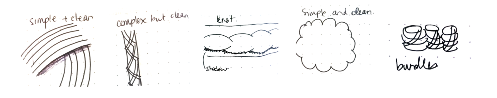

Blue-Faced Leicester Wool
a branding project
ONCE UPON A BRAND
As part of low-fidelity design work at General Assembly, I was asked to create a new brand for a hypothetical outdoors company, using the following descriptor for inspiration:
“simple, reliable, aspirational, established”
Below is a deep dive on how (and why) I chose to brand wool. In particular, Blue Faced Leicester (BFL) wool, the best kind of wool you've probably never heard of.
research
Secondary research—I looked at competitors' price, product options, pitch, values, and partnerships. Reading into their history I found a common message about sustainability, community, and patriotism.
Common theme: Most of the companies had some form of design philosophy.
Theme and style—Evoking either athleticism or tradition, there was little overlap in style between brands. I saw an opportunity to blend attributes of both; warm tones with vector imagery.
Brands conveyed athleticism with bright colours, scenic photography, and vector images or tradition with soft colours, photos of families, and use of serif font types.
At this point, I discovered BFL wool, its rich Canadian history, and its high-quality features. Majority of the leading quality brands were from Europe, targeted to adults, with a predominately serious tone to their brand story. I saw another opportunity.
why not bring european standards to canadian youth markets?
The features of European brands combined with BFL wool's Nova Scotian history were the basis for a brand story on heritage that was authentic, patriotic, and new. I deliberately chose a fun and playful brand image as an opportunity to stand out and connect with younger audiences.
vision & mission statement
Vision and mission statements bring authenticity to the brand. I used the descriptors' synonyms to brainstorm the brand's vision and mission statements.

Highlighted synonyms of each respective descriptor work well together to support the brand's name and style (its' Canadian history, quality wool, etc.)
Ultimately creating a statement that can guide the overall experience the users expect from the company.
What does it mean to be simple? In what ways is the [company, product] simple? What does it mean to be reliable?
The more authentic a company's branding and marketing → the more likely customers will feel a connection with the imagery the products are attempting to convey → the easier it is to design and build an experience to support that image.
mood board & style guide

Images evoking: "50s feel". Inspired use of bright, warm, and soft colours in the style guide.

Images evoking: "fabric, humble, familiar, comfort". Inspired ideas on how to showcase wool on a web interface.
Images of "fabric, tradition, heritage". More logo inspiration, using a more minimal style.
kiss; keep it simple stupid
Despite enjoying the process of building each mood board I struggled because I had created too many, having put more work than necessary. As a solution, I looked for one common theme within each mood board and allowed it to represent a component of the brand.
Colour—The shades of blue, orange, and green work in harmony to show warmth, familiarity, and fun. They were inspired by the rich, vibrant colours used in products in the 1950s and the sunsets on the coasts of Nova Scotia.

Typography—I wanted to use a clear and minimal font that was versatile enough for written content (various weights) but clean and legible enough for showcasing products on all interfaces.

logo
Creating the logo was an extensive process.It was difficult to pick just one style and refine it, since every style could lead to a new kind of logo.
At some point, I needed to stop having fun.
diverge—Letting go is hard. I did user tests with a group of people to ultimately discover that none of these were great.


converge—I liked the idea of using an actual
sheep to add character to the logo with the background resembling a ball of yarn.
To balance the modern colours and vector style of the brand, I used a serif font, Cinzel.
I wanted the font to look good whether it's abbreviated or lengthened. I widened the space between the letters so it appears
balanced next to the sheep icon.

ui elements
The UI elements were inspired by how strings overlap each other, creating knots and shadows yet are simple and clean at its core.

This helped define major features of
the design system with illustrative and functional iconography. Eventually creating a fun and playful shopping visual experience
with reactions to user inputs that are as playful as the brand.